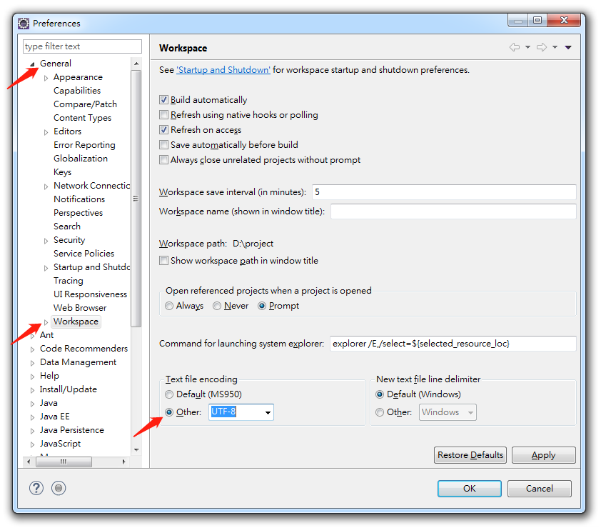
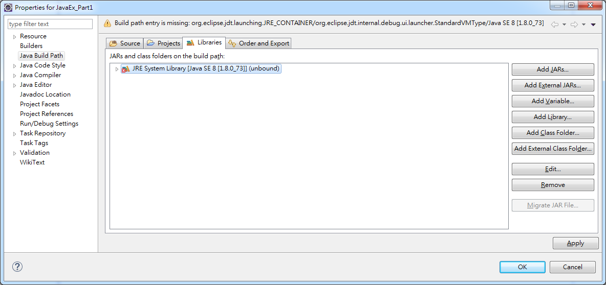
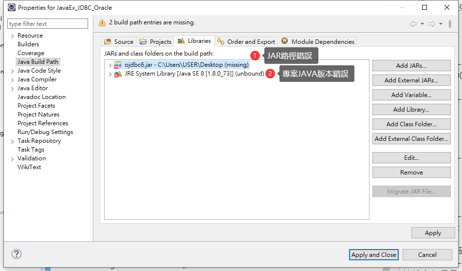
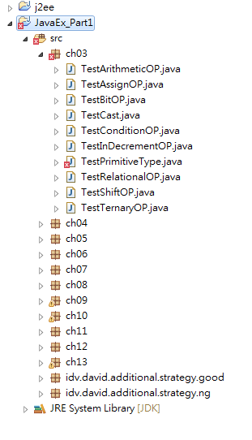
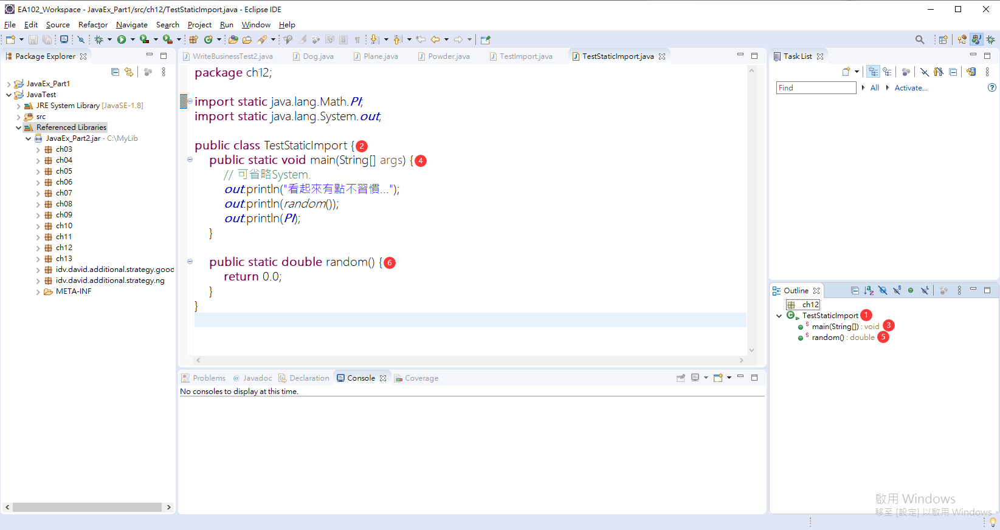
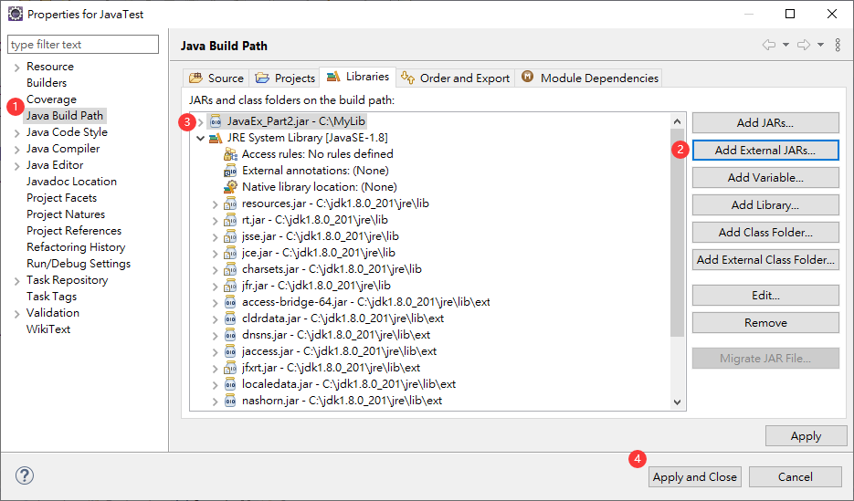
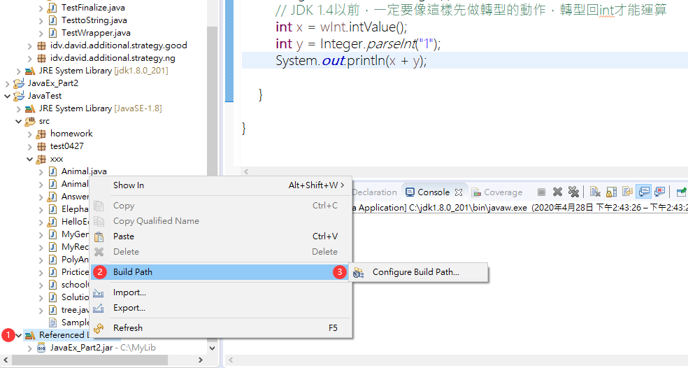

目錄
- 1. Eclipse 安裝
- 2. Eclipse 修改所有文件預設編碼為 UTF-8
- 3. Eclipse 導入壓縮項目
- 4. Eclipse 導入的驚嘆號(！)問題
- 5. Eclipse 導入後文件錯誤(X)問題
- 6. Eclipse 快捷
- 7. Eclipse 改變字體大小
- 8. Eclipse 中 package 錯誤
- 9. Eclipse 除錯(Debug)功能
- 10. Eclipse Outline 功能
- 11. Eclipse 還原測試視窗
- 12. Eclipse 保存代碼時自動格式化
- 13. Eclipse 無法正常導入項目
- 14. Eclipse 創建介面(Interface)檔
- 15. Eclipse 匯出(Export) jar
- 16. Eclipse 引入類別函式庫(第三方或自己的)
- 17. Eclipse 移除引入的類別函式庫
- 18. Eclipse 生成 hashCode()與 equals()
- 19. 注意
1. Eclipse 安裝
Eclipse
- 下載企業版(Eclipse IDE for Enterprise Java Developers)
- 執行後的 Workspace(工作區) 選擇自己的項目資料夾
2. Eclipse 修改所有文件預設編碼為 UTF-8
Window>Perferences>General>Workspace>Text file encoding>Other>UTF-8- 如果系統是 windows，可使用預設文字，並將項目單獨右鍵修改編碼

3. Eclipse 導入壓縮項目
File>Import>Existing Projects into Workspace

Select archive file選擇需導入的項目 > 點選Finish

4. Eclipse 導入的驚嘆號(！)問題
因為項目中無此 jar 包，故需更改解決辦法
Build Path>Configure Build Path>Libraries標籤雙擊出現
x符號的JRE System Library[Java SE...](JAR 包)Alternate JRE>Finish

JAR路徑錯誤解決辦法
- 修改 JAR 路徑位置
開啟目錄
- 套件複製至新位置
Build Path>Configure Build Path>Libraries標籤 > 雙擊出現x符號的項目 > 選擇自訂的 Library 位置

- 選擇 localhost 資料庫版本

- 改完結果
5. Eclipse 導入後文件錯誤(X)問題
問題原因
- 文字編碼不同，會導緻文字亂碼
解決方法
- 照著 Eclipse 修改所有文件預設編碼為 UTF-8步驟操作即可

6. Eclipse 快捷
一次註解
Ctrl + /
7. Eclipse 改變字體大小
Window>Perferences>General>Apperance>Colors and Fonts>Java>Java Editor Text Font>Change
8. Eclipse 中 package 錯誤
- 假設複製文件到新的 package 時應該注意
package xxx;需要跟當下package name相同，否則會有錯誤産生

9. Eclipse 除錯(Debug)功能
設定中斷點
Ctrl + Shift + B執行 Debug
F11跳至下一行
F6
Debug TestWhile>switch>Step Over(F6)
跳至下個中斷點
F5
Debug TestWhile>switch>Step Into(F5)
關閉測試
Ctrl + F2
Run>Terminate(Ctrl + F2)
variables 視窗中 name 左方
L字樣的小 icon 錶示區域變數
10. Eclipse Outline 功能
可用 Outline 方式跳到資料再程式碼中的執行位置(類似錨點)

11. Eclipse 還原測試視窗
Window>Perspective>Reset Perspective...
12. Eclipse 保存代碼時自動格式化
windows>Preferences>Java>Editor>Save Actions- 勾選
Perform the selected actions on save
13. Eclipse 無法正常導入項目
錯誤提示
Some projects cannot be imported because they already exist in the workspace；
問題原因
- workspace 中已經存在相同名稱的項目，所以不能導入
- 項目資料已刪，但資料夾未在 workspace 中刪除
解決方法
- 方法 1: 找到設定 workspace 項目時的地點，將該資料夾移除
- 方法 2: 修改項目名：右擊
refactor>rename或F2 - 方法 3: 打開項目中
.project文件 > 修改<name>projectName</name>
14. Eclipse 創建介面(Interface)檔
15. Eclipse 匯出(Export) jar
file(或在 Package Explore 區域右鍵) >Export>JAR file可指定選擇要製成 jar 的項目
ok匯出成功
16. Eclipse 引入類別函式庫(第三方或自己的)
創建自訂函式庫存放位置
開啟引入介面
選擇要引入的函式庫
成功引入
17. Eclipse 移除引入的類別函式庫
Build Path>Configure Build Path...選擇需移除的函式庫 >
Remove> 移除成功
18. Eclipse 生成 hashCode()與 equals()
Alt + Shift + S>Generate hashCode() and equals()...
19. 注意
- JDK 的位元(32 位)，需和 Eclipse 相同否則會報錯
參考鏈接: